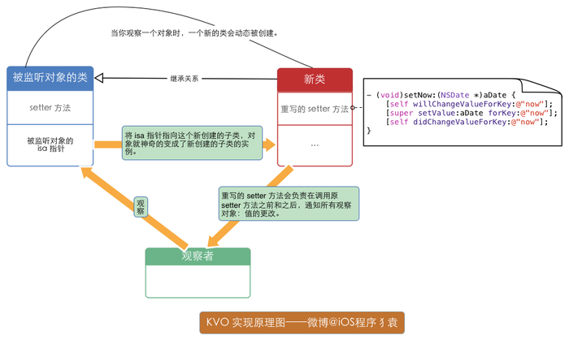

KVO
KVO，即key-value-observing,利用一个key来找到某个属性并监听其值得改变。其实这也是一种典型的观察者模式。
简单的说，kvo的用法非常简单。
- 添加观察者
- 在观察者中实现监听方法，observeValueForKeyPath: ofObject: change: context:（通过查阅文档可以知道，绝大多数对象都有这个方法，因为这个方法属于NSObject）
- 移除观察者
如果将一个对象设定成属性,这个属性是自动支持KVO的,如果这个对象是一个实例变量,那么,这个KVO是需要我们自己来实现的.
1 | // |
1 | // |
1 | // |
KVO的底层实现
当一个类的属性被观察的时候，系统会通过runtime动态的创建一个该类的派生类，并且会在这个类中重写基类被观察的属性的setter方法，而且系统将这个类的isa指针指向了派生类，从而实现了给监听的属性赋值时调用的是派生类的setter方法。重写的setter方法会在调用原setter方法前后，通知观察对象值得改变。

facebook开源的工具，KVOController ，是一个简单安全的 KVO（Key-value Observing，键-值 观察）工具，好像挺好用的。
KVC
KVC概述
KVC是Key Value Coding的简称。它是一种可以通过字符串的名字（key）来访问类属性的机制。而不是通过调用Setter、Getter方法访问。
关键方法定义在 NSKeyValueCodingProtocol
KVC支持类对象和内建基本数据类型。
KVC使用
获取值
valueForKey: 传入NSString属性的名字。
valueForKeyPath: 属性的路径，xx.xx
valueForUndefinedKey 默认实现是抛出异常，可重写这个函数做错误处理修改值
setValue:forKey:
setValue:forKeyPath:
setValue:forUnderfinedKey:
setNilValueForKey: 对非类对象属性设置nil时调用，默认抛出异常。
KVC键值查找
搜索单值成员
setValue:forKey:搜索方式
- 首先搜索setKey:方法。（key指成员变量名，首字母大写）
- 上面的setter方法没找到，如果类方法accessInstanceVariablesDirectly返回YES。那么按 _key，_isKey，key，iskey的顺序搜索成员名。（NSKeyValueCodingCatogery中实现的类方法，默认实现为返回YES）
- 如果没有找到成员变量，调用setValue:forUnderfinedKey:
valueForKey:的搜索方式
- 首先按getKey，key，isKey的顺序查找getter方法，找到直接调用。如果是BOOL、int等内建值类型，会做NSNumber的转换。
- 上面的getter没找到，查找countOfKey、objectInKeyAtindex、KeyAtindexes格式的方法。如果countOfKey和另外两个方法中的一个找到，那么就会返回一个可以响应NSArray所有方法的代理集合的NSArray消息方法。
- 还没找到，查找countOfKey、enumeratorOfKey、memberOfKey格式的方法。如果这三个方法都找到，那么就返回一个可以响应NSSet所有方法的代理集合。
- 还是没找到，如果类方法accessInstanceVariablesDirectly返回YES。那么按 _key，_isKey，key，iskey的顺序搜索成员名。
- 再没找到，调用valueForUndefinedKey。
KVC实现分析
KVC运用了isa-swizzing技术。isa-swizzing就是类型混合指针机制。KVC通过isa-swizzing实现其内部查找定位。isa指针（is kind of 的意思）指向维护分发表的对象的类，该分发表实际上包含了指向实现类中的方法的指针和其他数据。
比如说如下的一行KVC代码：
1 | [site setValue:@"sitename" forKey:@"name"]; |
每个类都有一张方法表，是一个hash表，值是还书指针IMP，SEL的名称就是查表时所用的键。
SEL数据类型：查找方法表时所用的键。定义成char*，实质上可以理解成int值。
IMP数据类型：他其实就是一个编译器内部实现时候的函数指针。当Objective-C编译器去处理实现一个方法的时候，就会指向一个IMP对象，这个对象是C语言表述的类型。
KVC的内部机制：
一个对象在调用setValue的时候进行了如下操作：
- 根据方法名找到运行方法的时候需要的环境参数
- 他会从自己的isa指针结合环境参数，找到具体的方法实现接口。
- 再直接查找得来的具体的实现方法
KVC支持的聚合运算
- sum 求和
- max 最大值
- min 最小值
- avg 平均值
- count 数量
使用方法
新建一个类Person，里面存放一个属性age
1 | #import <Foundation/Foundation.h> |
创建一个数组，存放Person对象
1 | NSMutableArray<Person *> *persons = [NSMutableArray array]; |
使用@sum @min @max @avg @count进行聚合运算
1 | NSInteger sum = [[persons valueForKeyPath:@"@sum.age"] integerValue]; |
打印结果
1 | 2018-04-04 13:42:50.099122+0800 Test[11815:158919] sum=15 |
数组中直接存放数值的情况
直接使用@运算符.floatValue
1 | NSArray<NSNumber *> *arr = @[@1, @2, @3, @4]; |
打印结果
1 | 2018-04-04 13:47:56.108888+0800 Test[12017:162610] avg=2.5 |